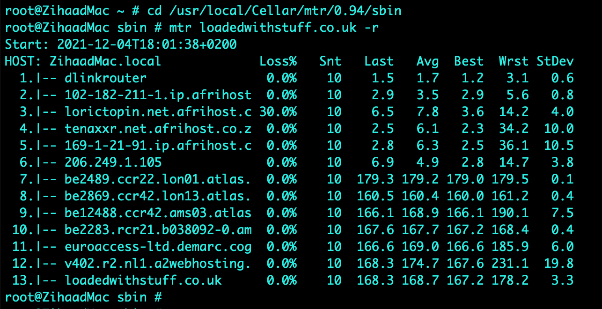
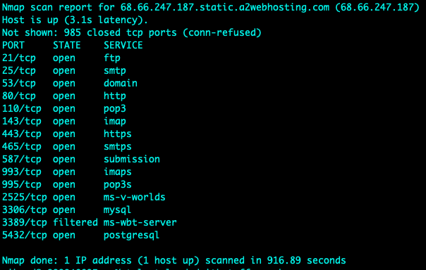
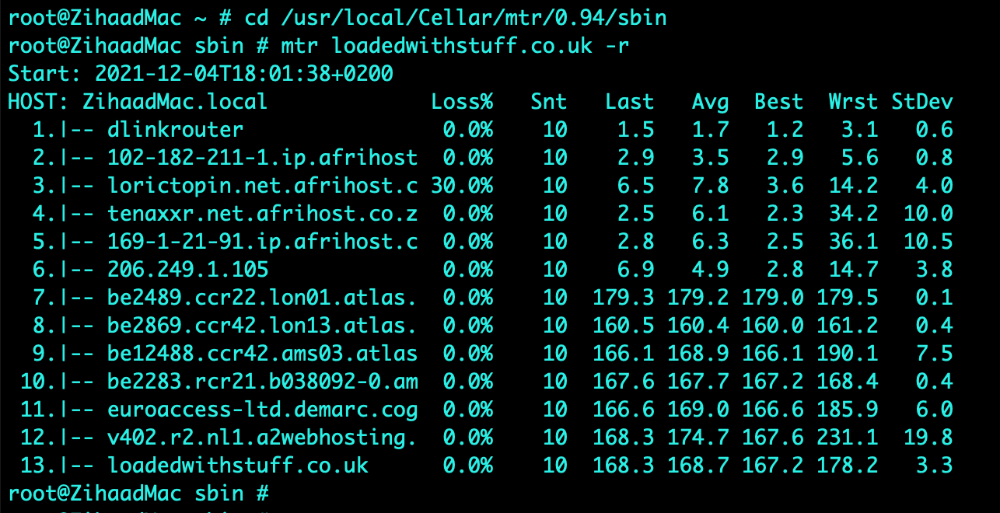
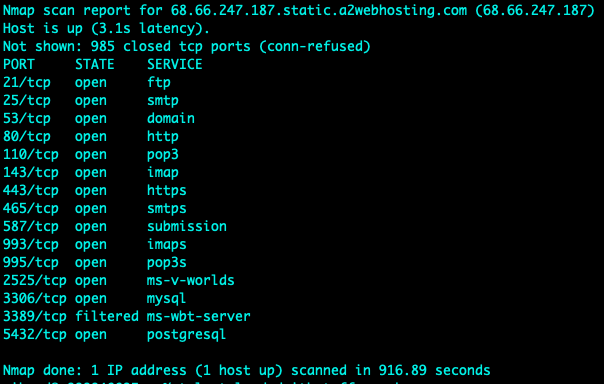

RMPP - Discussion Collaboration

Collaborative Learning Discussion 1
Pick a case study from the examples provided by the Association of Computing Machinery (ACM).
Review the application of the ethics code to the situation described and highlight the impact on any relevant legal (jurisdictional or non-jurisdictional) and social issues, as well as on the professionalism of the computing professionals involved. You should provide comparisons to the British Computer Society (BCS) Code of Conduct.
You should demonstrate that you understand the topic covered and ensure you use references to academic literature (including journals, books, and reports)
Your initial posting should respond to the question and be at least 200 words long. Your initial post should be labelled "initial post".
Initial Post
ACM Ethics (2018) provides a case study of an international company called Q Industries responsible for the manufacture of automated response weaponry on autonomous vehicles. These vehicles were used in military and law enforcement engagements. The initial design of the vehicles involved the use of tear gas and acoustic weapons to combat physical attacks by protesters. Due to multiple governmental requirements’, Q Industries extended the design of the vehicles to include lethal weaponry involving target shooting and explosives. Engineers at Q Industries protested against the use lethal weapons and was subsequently sued for breaching their employment contract (ACM Ethics, 2018).
The case study highlights the importance of ethical principles as defined by the ACM (ACM, 2018) and the BCS (BCS, 2022). Looking at the aspect around the engineers approach only, as computing professionals engineers are ethically bound to act in the best interest of the public governed by legislation (principle 1.1 of ACM, 2018). Their actions are justified according to principle 1.2 (Avoid Harm) and principle 2.7 (Foster public awareness) of the ACM (2018). Furthermore, this aligns with the BCS code of conduct (BSC, 2022) which states that computing professionals “have due regard for public health, privacy, security and wellbeing of others and the environment”. However, one must also be cognisance of the fact that employees are bound by the terms and conditions in an employment contract.
One can argue that this would supersede their confidentiality employment agreement. However, an employment agreement is a legally binding document in accordance with the law of that specific country. Marcu et al. (2020) argues that while ethics promote and bring about good they are not laws. On the other hand, the BCS (2022) code of conduct also mentions that information should not be withheld “unless lawfully bound by a duty of confidentiality not to disclose such information”, in this case engineers were legally bounded by an employment agreement.
List of References
ACM Ethics. (2018) ACM Code of Ethics and Professional Conduct. Available from: https://ethics.acm.org/ [Accessed 29 January 2023].
BCS. (2022) The Chartered Institute for IT CODE OF CONDUCT FOR BCS MEMBERS. Available from: https://www.bcs.org/media/2211/bcs-code-of-conduct.pdf [Accessed 29 January 2023].
Marcu, D., Milici, D. L., & Danubianu, M. (2020) Software Engineering Ethics. Postmodern Openings 11(4): 248-261. Available from: https://lumenpublishing.com/journals/index.php/po/article/view/3559/2648 [Accessed 29 January 2023].
Click here to download this post in a .pdf format Peer Responses Peer Response by Wang Wang Peer Response by Zihaad Khan to Sherelle Garwood Peer Response by Zihaad Khan to Wang Wang Tutor Feedback by Karen Outram The following post is a summary post based on peer responses received during the discussion.Summary Post
The ACM case study of Automated Active Response Weaponry looks at the ethical dilemma faced by engineers who work in the field of technology and the military. Q Industries, an international company, was responsible for manufacturing autonomous vehicles equipped with weapons for military and law enforcement use. Initially, these vehicles were designed to use tear gas and acoustic weapons for physical defence against protesters, but later, the design was extended to include lethal weapons such as target shooting and explosives. This move led to protests from the engineers at Q Industries, who felt that this use of lethal weapons went against their ethical principles. The company sued the engineers for breaching their employment contract, leading to a conflict between ethical considerations and the legally binding nature of an employment agreement.
The case brings up important points related to ethics in technology, specifically the ethical principles defined by the ACM Code of Ethics (ACM Ethics, 2018) and the BCS Code of Conduct (BCS, 2022). According to the ACM (ACM Ethics, 2018), computing professionals are ethically bound to act in the best interest of the public and to avoid harm, while the BCS code of conduct (BCS, 2022) states that “computing professionals must have due regard for public health, privacy, security, wellbeing of others and the environment”. In this case, the engineers felt that their ethical obligations to the public took priority over their employment agreement, but it also highlights the need for computing professionals to understand the limitations of their ethical obligations in the context of the law (Marcu et al., 2020).
The case also raises questions about the responsibilities of technology professionals in ensuring the ethical use of their products and the importance of considering the ethical implications of technology in addition to its functionality (Albrechtslund, 2007). It highlights the need for technology professionals to have a clear understanding of what they consider to be "good" in making ethical decisions and the importance of attending ethics seminars to help make these decisions (Mitchell, 2018). In conclusion, the case serves as a reminder that technology professionals must balance their obligations to their employers with their ethical obligations to society.
List of References
ACM Ethics. (2018) ACM Code of Ethics and Professional Conduct. Available from: https://ethics.acm.org/ [Accessed 10 February 2023].
Albrechtslund, A. (2007) Ethics and technology design. Ethics and Information Technology 9(1): 63-72. Available from: https://doi.org/10.1007/s10676-006-9129-8 [Accessed 11 February 2023].
BCS. (2022) The Chartered Institute for IT CODE OF CONDUCT FOR BCS MEMBERS. Available from: https://www.bcs.org/media/2211/bcs-code-of- conduct.pdf [Accessed 10 February 2023].
Marcu, D., Milici, D. L., & Danubianu, M. (2020) Software Engineering Ethics. Postmodern Openings 11(4): 248-261. Available from: https://lumenpublishing.com/journals/index.php/po/article/view/3559/2648 [Accessed 10 February 2023].
Mitchell, J. (2018) Ethics vs morality. Available from: https://www.bcs.org/articles-opinion-and-research/ethics-vs-morality/ [Accessed 11 February 2023].
Click here to download this post in .pdf formatCollaborative Learning Discussion 2
Discuss the results of your scans from this activity in Unit 3 with other students and your tutor by posting your responses to the forum. You can share individual results or submit as a team.
You should demonstrate that you understand the topic covered and ensure you use references to academic literature (journals, books, reports, etc.).
Your initial posting should respond to the question and be at least 200 words long. The initial post should be labelled ‘Initial Post’.
Initial Post
A scanning task was performed on an assigned website called “https://loadedwithstuff.co.uk” from South Africa - Johannesburg with basic scanning tools such as traceroute, mtr, dig, nslookup, whois, nmap and telnet. Various results were obtained and analysed as indicated in the screenshots attached.
tcptraceroute on port 80 was used on an Apple MacBook computer which yielded 13 hops to the destination, this was confirmed by executing an mtr (mytraceroute) which indicated 30% packet loss from hop 2 to hop 3. It was observed that the largest delay was from South Africa to London, with a round trip time (RTT) for a packet increasing from 6.9ms to 179.3ms (hop 7) respectively. The average delay for hop 7 was 179.2ms. This delay is expected as the connectivity average latency is around 140ms if SEACOM cables are used as a transport medium between the two countries (SEACOM, 2021). Name servers translate domain names into IP addresses or vice versa (A2 Hosting, 2021). The name servers (NS) identified were ns1.a2hosting.com, ns2.a2hosting.com, ns3.a2hosting.com and ns4.a2hosting.com; obtained by utilising the dig command. The online whois tool was used to obtain the registered contact details (various contacts at a2hosting.com) as indicated in the screenshots attached. The mail record (mail.loadedwithstuff.co.uk) was identified using nslookup. The website was found to be hosted by A2HOSTING in Amsterdam, Netherlands using the hosting checker online tool (Hosting Checker, 2021).
In addition, nmap was used to determine open ports, with the tools mentioned above it is relatively easy for attackers to fingerprint servers and launch attacks on the protocols identified (McNab, 2017). For example, knowing that port 80 is currently open – one can execute the telnet command and issue a HEAD / HTTP/1.0 request – this reveals that the server is running Apache while nmap reveals a PostgreSQL database installed. No issues were observed in obtaining the above-mentioned results.

 





List of References
A2 Hosting (2021) Nameservers: What Are They And How Do They Work? Available from: https://www.a2hosting.com/blog/what-are-nameservers/ [Accessed 01 December 2021].
Hosting Checker (2021) Hosting Checker Tool. Available from: https://hostingchecker.com [Accessed 01 December 2021].
McNab, C. (2017) Network Security Assessment: Know Your Network. 3rd ed. O'Reilly Media.
SEACOM (2021) PoP Latency Matrix. Available from: https://latency.seacom.com [Accessed 01 December 2021].
Click here to download this post as a Word Document Peer Responses Peer Response by Ying Chan Peer Response by Jonathan Callaghan Peer Response by Zihaad Khan to Jonathan Callaghan Peer Response by Zihaad Khan to Muhammad Qasim The following post is a summary post based on peer responses received during the discussion.Summary Post
As the world moves into a digital era, online technologies continue to grow at a rapid pace. These include desktop and web applications as well as the adoption of cloud computing. While online technologies make our lives easier, it is becoming a challenge for cybersecurity professionals to keep up with security threats and vulnerabilities that arise (Jamil et al., 2018).
One of the ways that cybersecurity professionals attempt to secure websites and servers is by performing regular scans and penetration testing using scanning tools. The purpose of a scanning tool is to acquire more information about a specific host or target (I.T Governance Ltd, 2021). A scanning task was performed on a website called “https://loadedwithstuff.co.uk” with basic scanning tools such as traceroute, mtr, dig, nslookup, whois, nmap and telnet to extract useful information.
Information such as hops to destination, round trip times (RTT), name servers (NS), open ports amongst others were revealed. This task proved the simplicity involved to obtain sensitive information regarding a website. A scan tool of note is nmap (Network Mapper) which determines open ports to a server (Kaur & Kaur, 2017). While nmap is often used by attackers it is also used by network administrators and security professionals to perform security audits on networks (Hoque et at., 2014).
In addition, Chan (2021) mentions that nmap could enable version detection during the scan with the “sV” option (Nmap, N.D). Version detection will try to elicit responses and gather information, a view that the writer agrees with. Callaghan (2021) highlights the usage and importance of the dig command for querying information, a view the writer appreciates. Furthermore, dig can also trace the path taken by appending the +trace option to the dig command as seen in the image attached.
In conclusion, scanning tools provide the opportunity to discover sensitive information on servers/websites which could result in potential hacking. Server and website administrators should make use of these tools and strive to ensure that their systems remain secure.

List of References
Callaghan, J. (2021) ’Collaborative Learning Discussion 2’. Peer response submitted to University of Essex Online for [NISM_PCOM7E November 2021] Initial Post by Zihaad Khan. Available from: https://www.my-course.co.uk/mod/hsuforum/discuss.php?d=289200 [Accessed 17 December 2021].
Chan, Y. (2021) ’Collaborative Learning Discussion 2’. Peer response submitted to University of Essex Online for [NISM_PCOM7E November 2021] Initial Post by Zihaad Khan. Available from: https://www.my-course.co.uk/mod/hsuforum/discuss.php?d=289200 [Accessed 17 December 2021].
Hoque, N., Monowar, B.H., Baishya, R.C., Bhattacharyya, D.K., Kalita, J.K. (2014) Network attacks: Taxonomy, tools and systems. Journal of Network and Computer Applications, 40(1): 307-324. Available from: https://www.sciencedirect.com/science/article/pii/S1084804513001756 [Accessed 17 December 2021].
I.T Governance Ltd (2021) Vulnerability scanning: what it is and how it works. Available from: https://www.itgovernance.co.uk/vulnerability-scanning [Accessed 18 December 2021].
Jamil, A., Asif, K., Ashraf, R., Mehmood, S., Mustafa, G. (2018) ‘A comprehensive study of cyber attacks & counter measures for web systems’, 2nd International Conference on Future Networks and Distributed Systems (ICFNDS). New York, 26 June 2018, Association for Computing Machinery. Article 50, 1–7.
Kaur, G., Kaur, N. (2017) Penetration Testing - Reconnaissance with NMAP Tool. International Journal of Advanced Research in Computer Science. 8(3): 844-846. Available from: http://www.ijarcs.info/index.php/Ijarcs/article/view/3111/3094 [Accessed 18 December 2021].
Nmap (N.D.) Service and Version Detection. Nmap Reference Guide. Available from: https://nmap.org/book/man-version-detection.html [Accessed 17 December 2021].
Click here to download this post as a Word DocumentCollaborative Learning Discussion 3
Read the website at Data Protection Commission (2020) CaseStudies|DataProtection Commission Available from: https://dataprotection.ie/en/pre-gdpr/case-studies
There are several case studies published during years 2014 – 2018 concerning GDPR related issues and breaches. Considering the case study you have chosen answer the following questions:
- What is the specific aspect of GDPR that your case study addresses?
- How was it resolved?
- If this was your organisation what steps would you take as an Information Security Manager to mitigate the issue?
Your initial posting should respond to the question and be at least 200 words long. Your initial post should be labelled "initial post".
Initial Post
The Data Protection Commission (DPC) received a complaint from an individual that was subjected to unsolicited marketing telephone calls from Virgin Media Ireland Limited. This occurred after the individual requested more than once that the company should remove her from their database and should not call her in future (DPC, N.D). An investigation was conducted by the DPC which resulted in the organisation accepting guilt pleading human error and consequently being fined.
In terms of the General Data Protection Regulation (GDPR) act, Virgin Media Ireland Limited was in breach of the following articles (Intersoft Consulting, N.D):
Article 6: Lawfulness of processing – since the data subject has not given consent to the organisation to process her data.
Article 7: Conditions for consent – since Virgin Media Ireland Limited was unable to demonstrate consent received from the complainant.
Article 21: Right to Object – since the data subject has objected to the processing of her data for direct marketing purposes.
Human errors are inevitably going to be present in organisations however the priority should be to minimize this as much as possible by implementing foolproof policies and procedures. Strict policies should exist as well as mandatory GDPR specific training for all staff in the organisation. Furthermore, one of the mitigation techniques that could be used is a central communication system where all calls route through. Once a call is made, screening occurs to determine if calls have been made to a subscriber previously. In addition, the Information Commissioners Office (ICO, 2020) mentions that evidence of consent should be kept. Consent in terms of telemarketing can be achieved by calls being recorded (consent for call recording is also required).
List of References
DPC (N.D) Data Protection Commission Case Studies, Pre GDPR – 2017. Available from: https://www.dataprotection.ie/en/pre-gdpr/case-studies#201712 [Accessed 22 January 2022].
ICO (2020) Guide to the General Data Protection Regulation (GDPR). Available from: https://ico.org.uk/for-organisations/guide-to-data-protection/guide-to-the-general-data-protection-regulation-gdpr/lawful-basis-for-processing/consent/ [Accessed 22 January 2022].
Intersoft Consulting (N.D) General Data Protection Regulation. Available from: https://gdpr-info.eu/art-95-gdpr/ [Accessed 22 January 2022].
Click here to download this post as a Word Document Peer Responses Tutor Response by Beran Necat Peer Response by Ying Chan Peer Response by Austin Mundy Peer Response by Zihaad Khan to Kingsley Onyeemeosi Peer Response by Zihaad Khan to Michael Geiger The following post is a summary post based on peer responses received during the discussion.Summary Post
Virgin Media Ireland Limited had undergone an investigation by the Data Protection Commission (DPC) after receiving a compliant from an individual. The individual claimed to receive unsolicited marketing calls more than once despite having opted-out from the organisations marketing campaign. Virgin Media Ireland Limited was found guilty of breaching the General Data Protection Regulation (GDPR). The company pleaded human error and was consequently fined. It was also found that this was not the first complaint received by the DPC (DPC, 2017) which contributed to the case.
Virgin Media Ireland Limited was in breach of the following articles (Intersoft Consulting, N.D.) according to the GDPR, Article 6 - Lawfulness of processing, Article 7 - Conditions for consent and Article 21 - Right to Object.
The mitigation actions and recommendations that will be applicable to Virgin Media Ireland Limited are as follows:
- Foolproof policies must exist and be updated regularly as regulations are amended.
- The appointment of a regulation/security officer is recommended as mentioned by Mundy (2022) to assist with the compliancy of the above-mentioned policies. This can be an experienced individual familiar with implementing GDPR policies and processes across the organisation.
- Mandatory GDPR specific training for all staff in the organisation should be performed. A record of this should be kept as well.
- Design changes to the call routing platform to implement call screening across the organisation is also recommended. This should work in tandem with the opt-out process from potential customers as suggested by Chan (2022). Once opt-out options are triggered, call routing databases should be updated to include this information.
- Any evidence of consent must be recorded and kept as well for future use as recommended by the Information Commissioners Office (ICO, 2020).
List of References
Chan, Y. (2022) ’Collaborative Learning Discussion 3’. Peer response submitted to University of Essex Online for [NISM_PCOM7E November 2021] Initial Post by Zihaad Khan. Available from: https://www.my-course.co.uk/mod/hsuforum/discuss.php?d=293059 [Accessed 06 February 2022].
DPC (2017) Data Protection Commission Case Studies, Pre GDPR – 2017. Available from:https://www.dataprotection.ie/en/pre-gdpr/case-studies#201712 [Accessed 06 February 2022].
ICO (2020) Guide to the General Data Protection Regulation (GDPR). Available from: https://ico.org.uk/for-organisations/guide-to-data-protection/guide-to-the-general-data-protection-regulation-gdpr/lawful-basis-for-processing/consent/ [Accessed 06 February 2022].
Intersoft Consulting (N.D) General Data Protection Regulation. Available from: https://gdpr-info.eu/art-95-gdpr/ [Accessed 06 February 2022].
Mundy, A. (2022) ’Collaborative Learning Discussion 3’. Peer response submitted to University of Essex Online for [NISM_PCOM7E November 2021] Initial Post by Zihaad Khan. Available from: https://www.my-course.co.uk/mod/hsuforum/discuss.php?d=293059 [Accessed 06 February 2022].
Click here to download this post as a Word Document